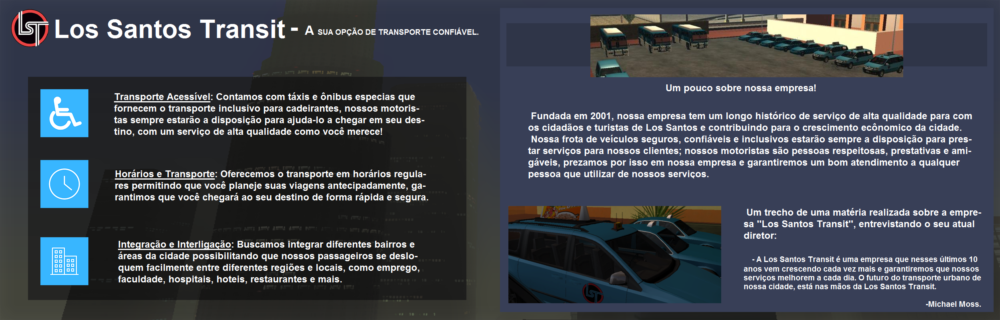

BEM-VINDO A LOS SANTOS TRANSIT
A MAIOR EMPRESA DE TRANSPORTE PÚBLICO DE SAN ANDREAS
Somos a principal empresa de transporte urbano e regional de Los Santos. Há mais de duas décadas, fornecemos soluções confiáveis e sustentáveis de mobilidade para a comunidade. Nossos motoristas profissionais e frota moderna garantem que você chegue ao seu destino com eficiência e cortesia. Descubra nossos serviços de transporte público, entrega de mercadorias e muito mais. Seja parte da nossa jornada rumo a um transporte de qualidade em San Andreas.
